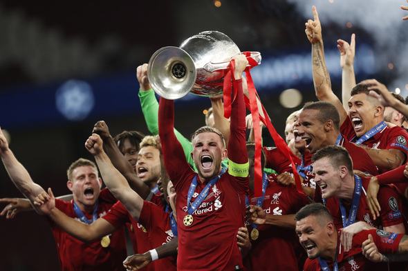

축구_리버풀
" 잉글랜드 머지사이드 주 리버풀을 연고지로 둔 프리미어 리그 소속 프로 축구 클럽. 프리미어리그의 소위 말하는 빅6 클럽 중 하나이다. 1892년에 창단되어 빌 샹클리와 밥 페이즐리 감독 시절 때는 붉은 제국이라 불리는 전성기를 보냈고 축구 역사에 길이 남을 명승부인 이스탄불의 기적과 안필드의 기적의 주인공이기도 하다. 현재 잉글랜드 클럽들 중에서 유일하게 빅 이어를 영구 소장하고 있으며, UEFA 챔피언스 리그 6회, 1부 리그 18회 우승을 차지한 명문 클럽이다. "
리버풀은 현재 독일의 위르겐 클롭이 이끌고 있으며 주장은 잉글랜드 출신의 조던 헨더슨입니다. 주로 4-3-3 포메이션을 활용하며 세부적인 전술이 궁금하다면 전술 카테고리에 들어가세요. 선수단에 대해 자세히 알고 싶으면 선수단 카테고리에 들어가세요.